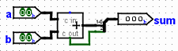
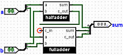

Substituting libraries
Now suppose we have two Logisim circuits that are supposed to do the same thing. As an instructor, you might have had students complete an assignment: You have one file containing your solution, but you have several student files containing their work. Maybe the assignment was to build a two-bit adder.
I'll imagine that we have two files, named master.circ and query.circ. Each file contains a circuit named Adder2 (it's important that the circuit to test be named exactly the same), whose appearance is the following.
Adder2 in master.circ Adder2 in query.circ  
As you can see, the master circuit uses Logisim's built-in adder, while the query circuit uses two subcircuits representing a half adder and a full adder (which themselves are built up of simple gates). For the purpose of our example, the query circuit has a stupid error: The carry from the half adder is not connected into the full adder.
We build our testing circuit into a different file test.circ. There, we load master.circ as a Logisim Library | Project |→| Load Library |→ | Logisim Library |, and we insert its 2-bit adder as a subcircuit. We could execute this circuit directly to get the desired output for a perfect solution.
java -jar logisim-evolution.jar test.circ -tty table
But we want to execute the circuit using query.circ rather than master.circ as the loaded library. The naive approach would be to open Logisim and load that library instead; or you might simply remove the master.circ file and rename query.circ to be named master.circ instead. But Logisim includes a handy -sub option that temporarily replace one file by another during that session — without making any changes on disk.
java -jar logisim-evolution.jar test.circ -tty table -sub master.circ query.circ
The output you would see from this is shown below; it is of course different from what we saw in the previous section because the library common to adder2 has been replaced in the test circuit by that of query.circ erroneous.
00 00 0E0 01 00 0E1 10 00 EE0 11 00 EE1 00 01 0E1 01 01 0E0 10 01 EE1 11 01 EE0 00 10 EE0 01 10 EE1 10 10 1E0 11 10 1E1 00 11 EE1 01 11 EE0 10 11 1E1 11 11 1E0
Next: Other verification options.